AnuRupa Matrimony is a private matchmaking platform for Anupama Reddy. It holds your profile book, lets you search it on behalf of a named client, and share a curated shortlist with that client over WhatsApp — then tells you what they opened and which profiles they liked.
There are two sides to the platform. The admin side is yours and is password protected. The client side is what families see: a share link you send them, or the public browse page. Clients never see your internal notes, finances or tags.
Go to /admin. You will be asked for the admin password. There is one admin account; the session lasts 12 hours, after which you sign in again.
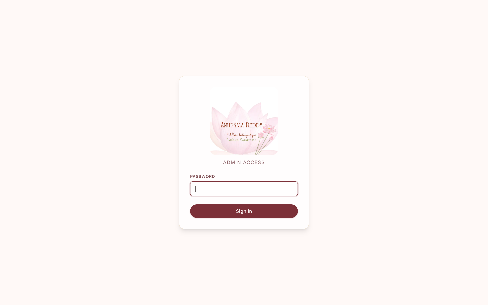
Three different people touch the platform, and each sees a different slice of it. These are the paths they take.
Signs in with the admin password. Sees everything.
Already-sent profiles are greyed out on the next search for that client, so the same profile is never sent twice.
No login, no app. They see only what the chosen share level allows.
Viewing needs nothing. Shortlisting asks for a name and mobile number the first time, because a link often gets forwarded within a family and we want to know who actually liked the profile. After that, hearts work in one tap.
Someone sent to the browse page rather than a specific shortlist.
Nothing is visible until they identify themselves, so anonymous browsing is not possible and every search they run is recorded against them.
After signing in you land on four sections. There is no menu bar to hunt through — everything starts here.
Clients and Share Links sit underneath as secondary links.
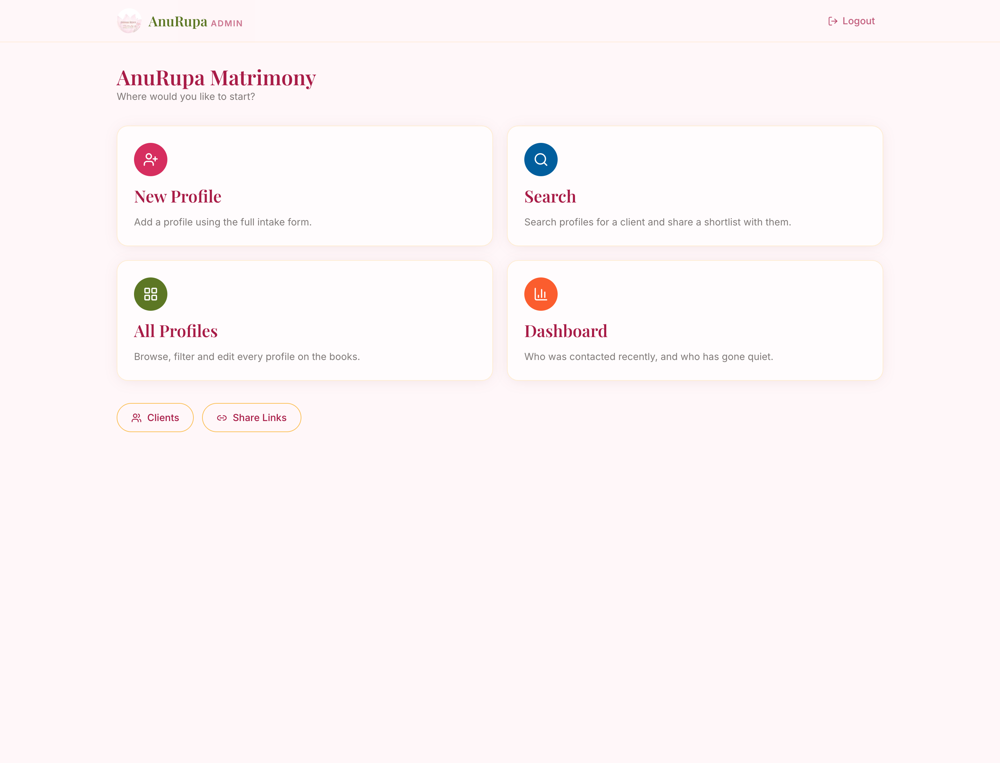
The form follows your own intake sheet, section by section, so you can work straight down a filled paper form without jumping around.
| Section | What goes in it |
|---|---|
| Personal | Gender (boy/girl), name, surname, date / time / place of birth, rasi, nakshatram, gotram, caste, sub-caste, height, religion, mother tongue, city, state |
| Education | Degree, university, school |
| Professional | Job, business, company, salary, citizenship, finances (annual, used by the search filter) |
| Family | Father and mother name, details and native place; siblings name, count and details; current address; family background notes |
| Contact | Primary contact, middlemen contact, email |
| Requirements | Requirements text, marital status, manglik, diet, horoscope notes |
| Internal | Tag (AM / AMP / AMO), net worth notes, private notes, active toggle |
Only Name is mandatory. Everything else can be filled in later, so you can create a profile from a phone call and complete it when the family sends details.
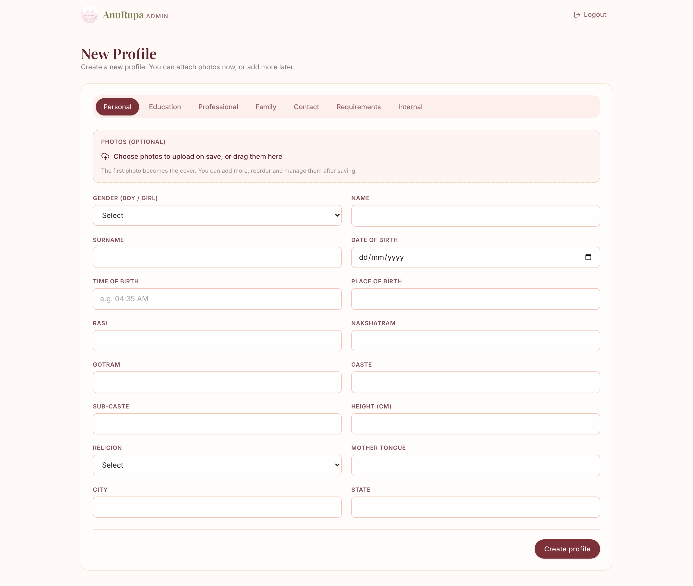
Three ways to add photos, so you are never stuck:
The first photo becomes the cover. After saving you can reorder them, set a different cover, or delete — on a phone those controls are always visible; on a desktop they appear when you hover.
Every profile on the books, newest first, with the same filters as search. Click any card to open and edit the full record. Tick profiles to share several at once.
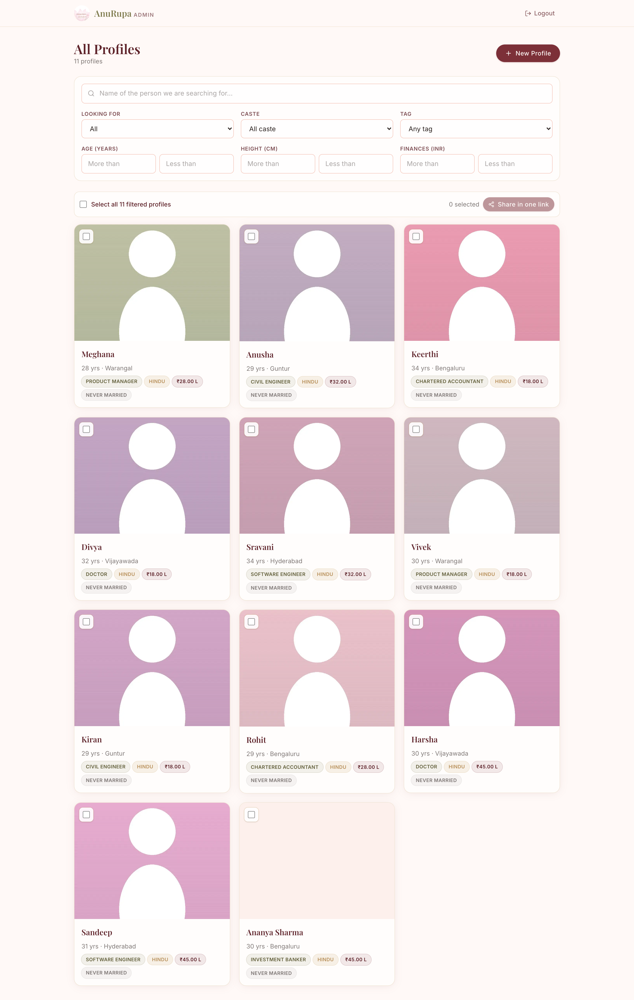
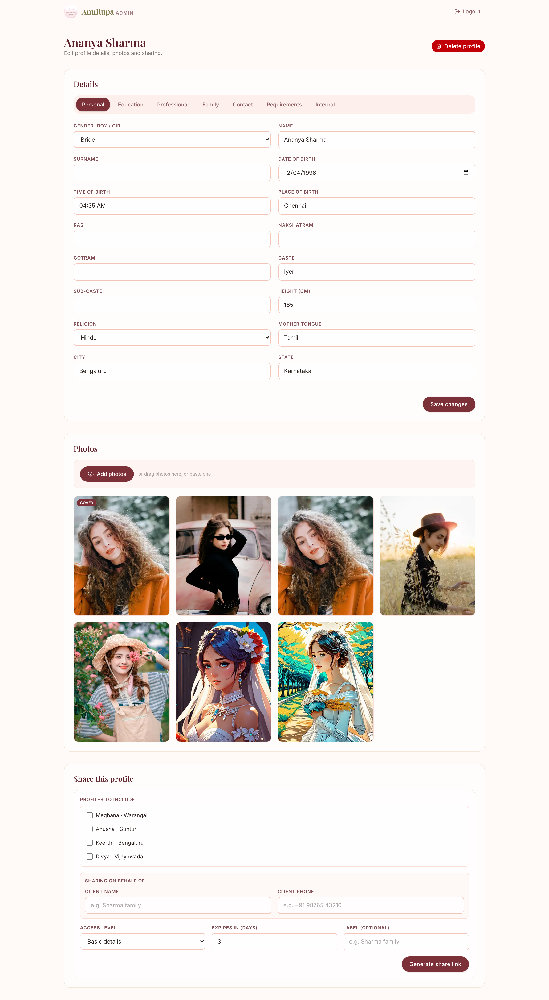
Search always runs on behalf of someone. That is what makes the tracking work. Choose an existing client, or add a new one with a name and phone number.
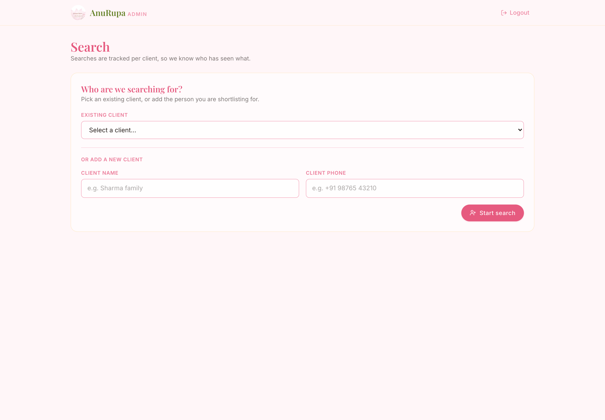
Then filter the book. The filters match your search sheet: name, who you are looking for, caste, tag, and more-than / less-than ranges for age, height and finances.
Results deliberately show only the five things you need to judge a match at a glance:
Use View / edit all details on any result to open the complete record.
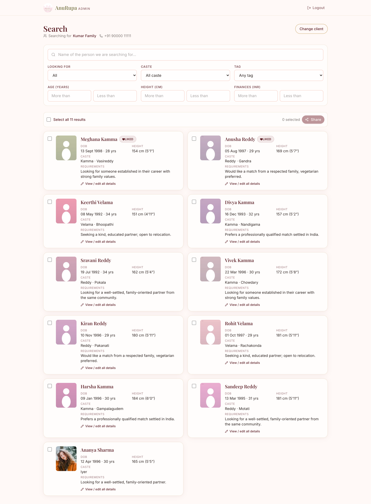
Tick the profiles you want — or Select all — and press Share. One link covers everything selected, so a family gets a single WhatsApp message rather than ten.
Choose how much the client sees:
| Level | What the client sees |
|---|---|
| Photos only | Name and the photo gallery. Nothing else. |
| Basic details | Name (no surname), date / time / place of birth, height, job, business, native place, photos. |
| All details | Everything above plus surname, caste, education, family, horoscope, requirements and contact. |
Set how many days the link stays alive, add an optional label, and generate. You then get a Copy link button and a Share on WhatsApp button that opens WhatsApp with the message and link already written, addressed to the client by name.
The client opens the link on their phone. No login, no app. They see the profiles you chose, at the level you chose, and a heart on each one.
The first time they tap a heart they are asked for their name and mobile number. A link is often forwarded within a family, so this records who actually liked the profile rather than assuming it was the person you sent it to. Once given, every further heart is a single tap.
They are matched to your client book by phone number, so if you already have them as a client the shortlist lands on that same record.
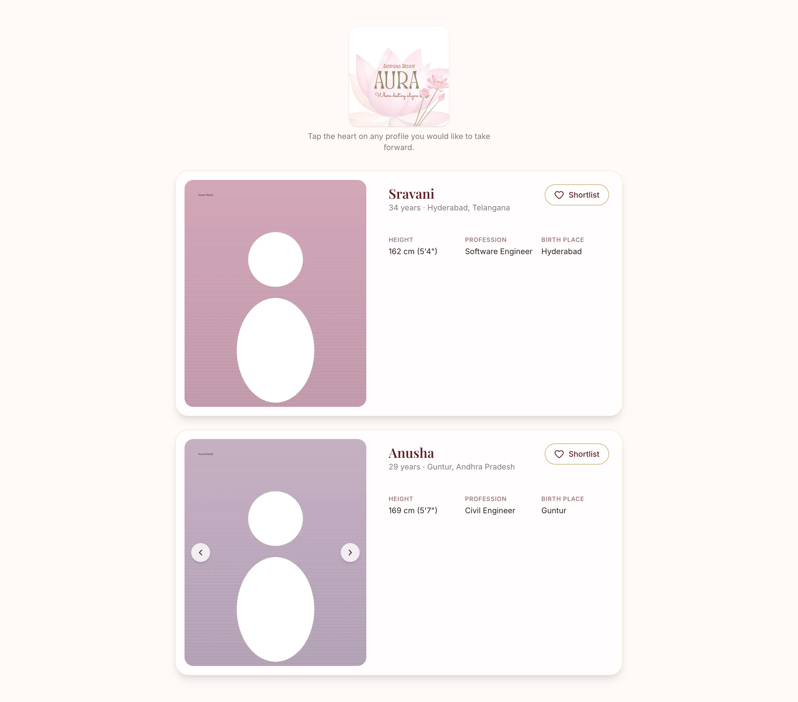
If you point someone at the public browse page, they are asked for a name and phone number before any profile is shown. That creates (or matches) a client record, so their filters and likes are attributed just like a shared link.
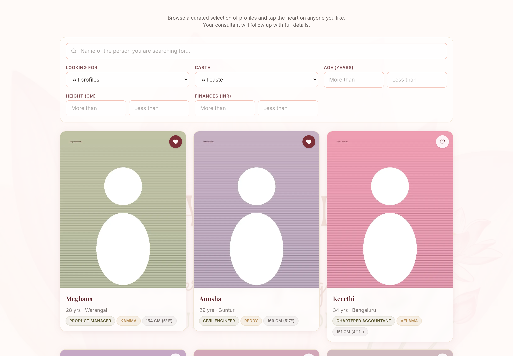
If the same person later gets a WhatsApp link, they are recognised by phone number — one client, not two.
Every person you have shared with or who has browsed. Search by name or phone number.
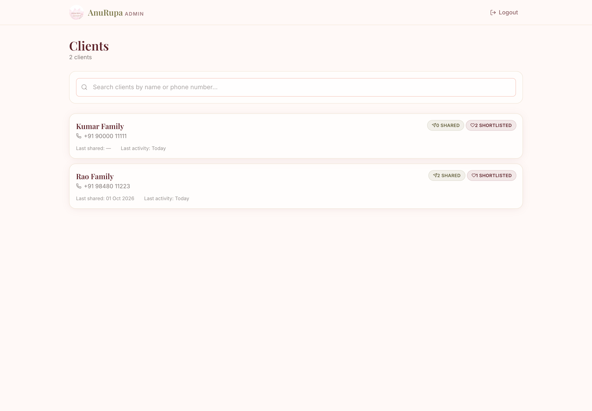
Open a client to see everything in one place: how many profiles they were sent, what they shortlisted, what they searched for, and every link with whether it was opened.
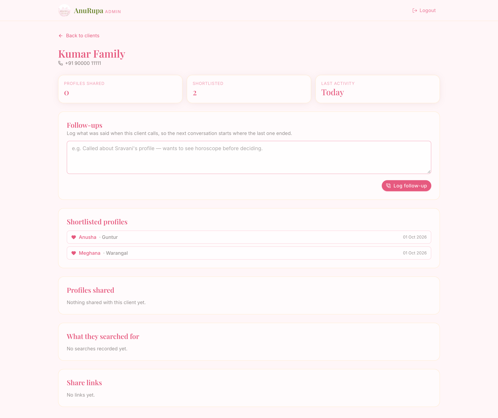
Three questions, answered on one screen:
"Responded" means they opened a link or hearted a profile. Someone messaged yesterday is not flagged as quiet — the 30-day clock only counts once a month has actually passed.
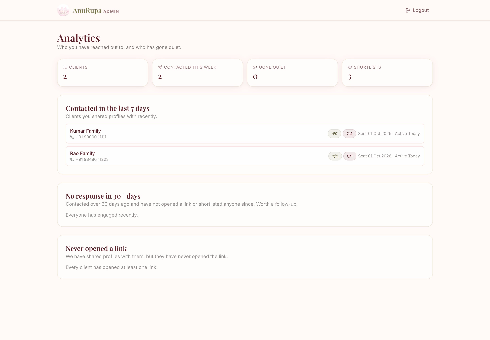
Every link you have ever created, who it went to, how many times it was opened, and when it expires. You can copy it again, re-send on WhatsApp, add +3 days, or revoke it immediately if a family should no longer have access.
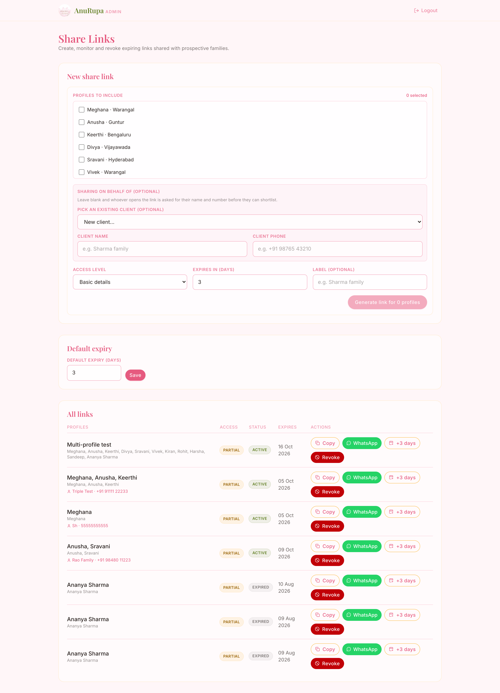
The whole admin side works on a phone — adding profiles, searching, sharing. Photo controls stay visible on touch screens rather than needing a hover.
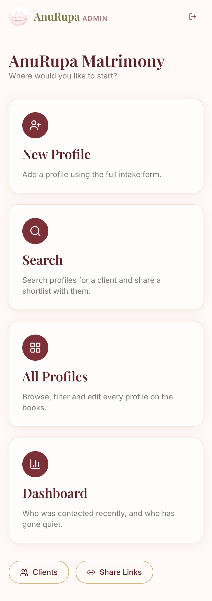
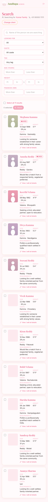
| Information | Photos only | Basic | All details | Admin |
|---|---|---|---|---|
| Photos, name | Yes | Yes | Yes | Yes |
| Birth details, height, job, native place | No | Yes | Yes | Yes |
| Surname, caste, family, horoscope, requirements, contact | No | No | Yes | Yes |
| Finances, marital status, tag, middlemen contact, private notes | No | No | No | Yes |